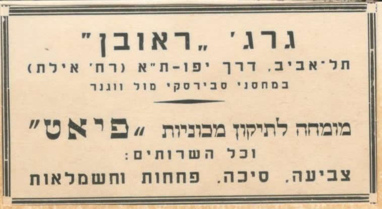
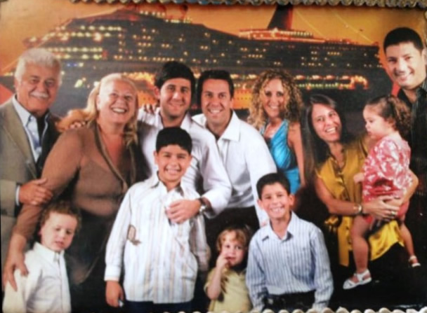
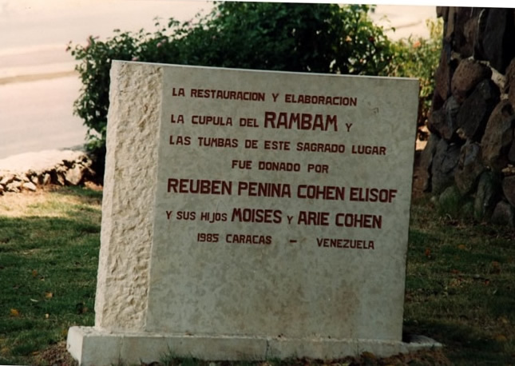
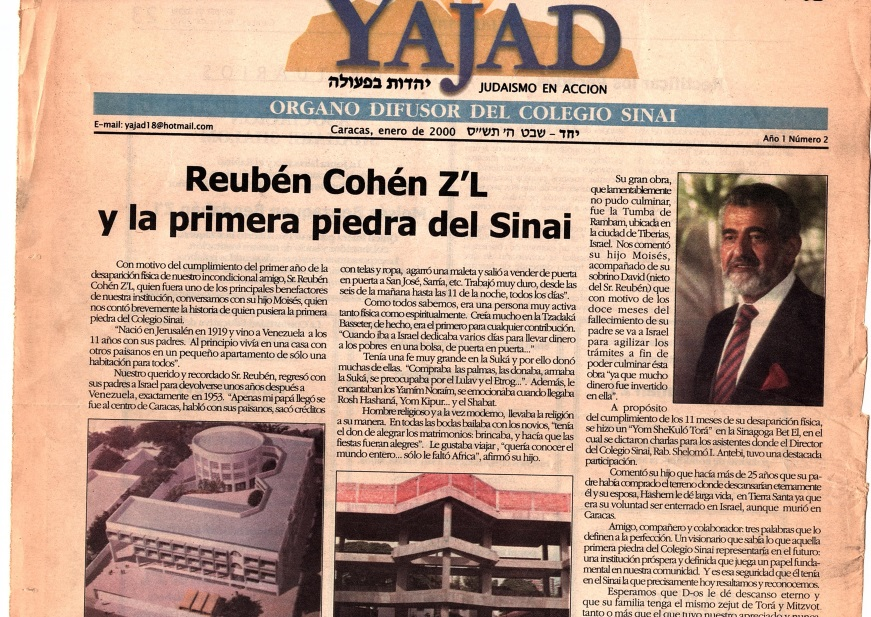
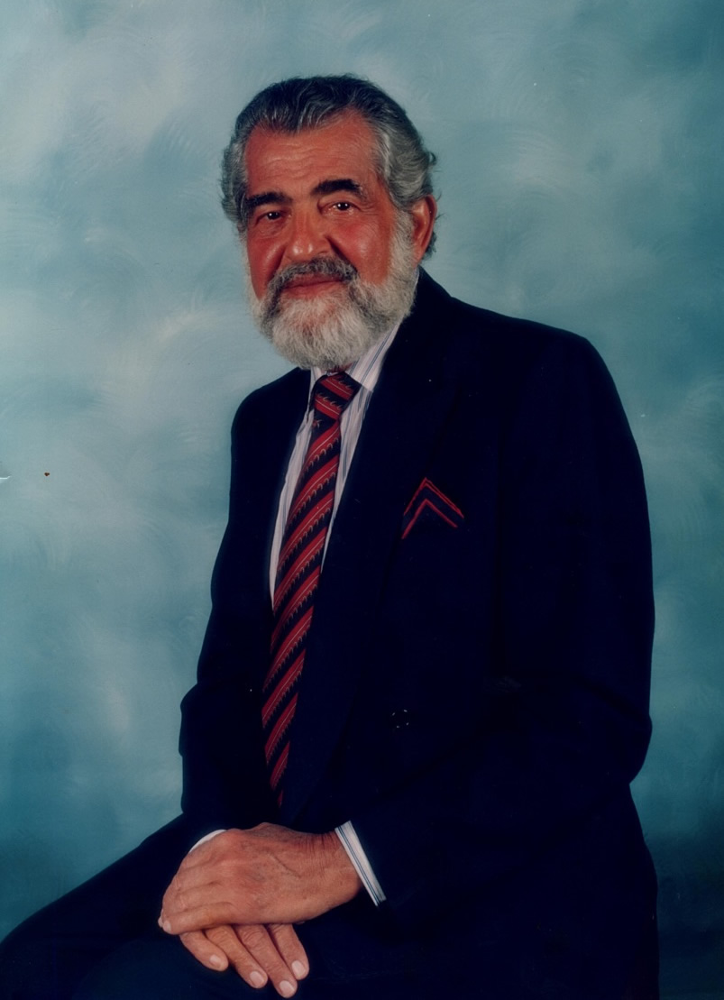

Mi
tátara abuelo Moshe era conocido como “El Millonario”. En 1935 nace
Jacobo el hermano pequeño de mi bisabuela y todos vivían en el
edificio que se llamaba Moshe Rubén Cohen.
Mi
tátara abuelo Moshe era conocido como “El Millonario”. En 1935 nace
Jacobo el hermano pequeño de mi bisabuela y todos vivían en el
edificio que se llamaba Moshe Rubén Cohen.Mis tátara abuelos Arie y Sara (padres de mi bisabuelo Reubén)
Los ancestros de mi abuelo Arie
Esta historia es muy particular pues de estos 4 tatarabuelos 2 de ellos son hermanos y las 2 esposas tienen más o menos la misma historia. Me explico mejor:
Mi Bisabuelo Reubén y mi Bisabuela Penina comparten abuelos paternos, pues sus padres eran hermanos y las madres de ambos también eran parientes de sus esposos.
Bueno comencemos:
Jonathan Yonatanov estaba casado con mi tátara tátara abuela (de quien lamentablemente desconocemos el nombre) quien era viuda de un señor de apellido Akvashoff y ya tenía 3 hijos de este matrimonio: Ben Tzion, Sara y Zulay. Luego al casarse con Jonathan tuvo tres hijos más: Arie, Abba y Moshe. Ellos vivían en Bukara.
Esta ciudad está ubicada en Uzbekistan, era hogar de una antigua comunidad judía que tiene 2500 años de historia. Mi Tátara tátara Abuelo era joyero, por lo que tenían una buena posición económica. Sin embargo, en 1912 llegaron los bolcheviques y maltrataron a los judíos robándoles sus pertenencias y en algunos casos quitándoles lo más sagrado, la vida. Mi familia decide que este no es un lugar seguro para sus hijos. Un hermano de mi tátara tátara abuela llamado Baruj Koba había emigrado a Israel en 1900 y construyó una sinagoga y un edificio contigua a éstaen “Shjunat ha Bujari” en el barrio bujari, en Jerusalén. Decidieron mandar a sus hijos con él.
El Sr. Baruj Koba y la sinagoga que construyó.
Por aquellos tiempos, debido a la situación insegura de los judíos de la zona, un grupo de musulmanes organizaron viajes a hacia Israel. Preparaban grupos de 20 muchachos (las edades oscilaban entre 10 y 12 años) y los guiaban a pie hacia Tierra Santa. Mis tátara tátara abuelos ya habían decidido enviar a sus hijos en este grupo donde también viajaban otros parientes, entre ellos mi tátara abuela Rajel Maijor, quien fuera esposa años más tarde de mi tátara abuelo Moshe (padres de mi bisabuela Penina). A Rajel sus padres le habían confeccionado un palto y en el cuello de éste le colocaron unas monedas de oro para que lo utilizara únicamente si surgía alguna eventualidad, alguna emergencia.
Mi tátara abuela Sara (mamá de mi bisabuelo Reubén)
Los muchacho caminaban y caminaban sobre todo de noche porque era más seguro que no los descubrieran y de día descansaban un poco, casi no dormían. A los musulmanes que los guiaban les habían pagado un 50% del total y al dejar a los niños seguros en Israel, los muchachos debían decirles una contraseña que representaba la prueba de fe para los padres de que habían llegado sanos y salvos a su destino. Luego estos guías volvían, les daban a los padres la prueba de vida y éstos les pagaban el resto del dinero.
A los tres hermanos los recibió su tío Baruj Koba, quien los crió hasta que se casaron. Los niños más nunca tuvieron noticias de sus padres.
Esposa del Sr. Koba, quien crió a los niños.
Cada uno de ellos se hizo de una profesión: Arie (papá de mi bisabuelo Reubén) era zapatero, Abba vendía pollos y Moshe (papá de mi bisabuela Penina) era carpintero. Los tres vivieron en Shjunat ha Bujari.
Arie se casó con Sara Eliosof, quien también vivió la misma experiencia de separarse de sus padres en Bukara y caminar hacia Israel, pero en un grupo diferente. Los dos tuvieron 5 hijos: Reubén (mi bisabuelo, nacido en Purim 1920), Rajel, Aliza, Maty y Aarón. Todos nacidos en Israel menos mi tío Aarón, quien nació en Caracas.
Mis tátara abuelos (padres de mi bisabuela Penina) Moshe y Rajel.
Moshe se casó con Rajel Maijor y tuvieron a: Penina (mi bisabuela nacida en Januca 1924), Jonathan, Shulamit, Isaac y Jacobo.
Abba se casó con Lea Abulafia y tuvieron seis niñas y un varón. Esther, Carmela (la futura esposa de Jonathan), Masha, Rebeca, Miriam, David y Linda. Hoy día viven todos en México, menos mis tías Carmela y Esther.
Mis tátara abuelos Arie y Sara (padres de mi bisabuelo Reubén)
En el año de 1927 llegó a Israel proveniente de Venezuela un Sr. Llamado Benjamin Mizrahi, quien era un conocido de la familia e invita a los tres hermanos a ir a Venezuela, lugar donde “el dinero crece en los arboles”. Los tres deciden probar y buscar una nueva suerte, agarran sus cosas, dejan a sus respectivas familias y emprenden su viaje.
En Caracas trabajaron vendiendo telas de casa en casa. Ellos les pidieron financiamiento a una compañía llamada Pariente Hermanos y estos le dieron un crédito de 100 bs en telas para ayudarlos. Mi Tátara abuelo Moshe escribió en un papel “ Vendo un metro de tela a un bolívar, la próxima semana vengo y usted me da x cantidad de bolívares” esta frase la escribió en fonética de español pero con escritura hebrea para poder leerla y repetirla a los clientes (eso es lo que se llama ser emprendedor). Y así es como vendía en San José y la Pastora.
Al cabo de unos meses los hermanos trajeron a sus respectivas familias. En el caso de Arie, se tarjo a su esposa y 4 hijos aquí nació el último Aarón. Moshe por su parte trajo a su esposa y 3 hijos, Isaac nació en Caracas. Ellos todos vivían en una residencia tipo vecindad en la que había varios cuartos con un jardín en medio de las habitaciones y todos los que ahí residían se conocían.
Mi Tátara abuela Rajel con mi bisabuela Penina ( a la izquierda) y mi tío Jonathan
Moshe escuchó que en el Callao “llovía el oro” y se fue solo para ver la situación. Tras poco tiempo manda a su mujer a venir con los cuatro niños (teniendo Isaac pocos meses de nacido). Rajel alquiló un camión y se trasladaron en él hasta el Callao. 20 días vivieron en ese transporte, el trayecto fue complicado ya que las vías eran muy rudimentarias, no había puentes y para pasar los ríos debían esperar que las aguas bajaran. Vivieron 2 años allá. Mi bisabuela recuerda que las condiciones eran muy precarias. Su papá compró un caballo y con él cargaba el oro que comercializaba.
Finalmente en el año 1933 al hacer mucha plata, la familia de mi bisabuela Penina decide regresar a Israel. Los otros hermanos se quedan un tiempo más en Venezuela.
Con mucha riqueza llegan a Jerusalén y Moshe compra un terreno en una parroquia llamada “Majané Yehuda” y construye ahí un edificio con 3 apartamentos 7 negocios y 2 sótanos.
Esta calle hoy día es donde está ubicado el mercado más famoso de Jerusalén el “Shuk Majané Yehuda” lugar muy turístico. El edificio todavía existe en el mismo lugar y en él hay una placa en memoria a quien fuera su constructor Moshe Cohen.
Mi
tátara abuelo Moshe era conocido como “El Millonario”. En 1935 nace
Jacobo el hermano pequeño de mi bisabuela y todos vivían en el
edificio que se llamaba Moshe Rubén Cohen.
Al cabo de unos meses mi tátara abuelo Moshe enfermó con fiebre tifoidea y fallece a la edad de 34 años.
Por otro lado Arie y su familia ya habían regresado a Israel ubicándose en Tel Aviv, donde trabajó como empleado de Gobierno en la alcaldía de Tel Aviv. Cuenta mi tío Isaac, hermano de mi bisabuela (a quien entrevisté para relatar esta historia) que su tío Arie se devolvió a Israel tras un incidente que involucraba a mi bisabuelo Reubén. Una tarde mi tátara abuelo Arie, regresó temprano de trabajar y al entrar al apartamento donde vivían en Caracas, se encontró a mi Bisabuelo muy cariñoso con una amiguita de la escuela. En ese momento el papá de mi bisabuelo decidió que había llegado el tiempo de volver a Israel pues no quería ver a ninguno de sus hijos involucrados con chicas no judías.
En
el año de 1940 vino a Jerusalén de visita el primo Reubén, hijo de
Arie a visitar a la viuda de su tío Moshe y a sus primos. Al ver a
Penina quedó encantado con ella y empezó a cortejarla. Ella tenía
15 años y no estaba preparada para casarse, sin embargo a su mamá
le gustaba mucho la idea que su hija se casara con Reubén, pues
sabía que este la cuidaría muy bien. Así fue como a la edad de 16
años mi bisabuela fue prácticamente obligada a casarse conmi
 bisabuelo Reubén, quien tenía 20 años.
bisabuelo Reubén, quien tenía 20 años.
Se mudaron a Tel Aviv y tras ellos la familia de mi bisabuela quienes decidieron seguirla para permanecer todos juntos. Mis bisabuelos vivían en Nevé Shalom en un apartamento en una planta baja, la cual los árabes bombardearon en 1948, tras declararse la independencia de Israel. Mis bisabuelos quedaron sin casa y con dos niños pequeños: Moshenacido el 24 de octubre de 1943 y Arie quien nació el 12 de septiembre de 1944.
Mi bisabuelo Reubén rápidamente construyó un ranchito en lo que hoy día seria” Kikar Ha Medina” en Tel Aviv. Trabajó como mecánico en un garaje de carros marca Fiat. Poco a poco ahorró, alquiló un galpón en Rejov Yaffo y montó su propio taller de carros llamado “Garaje Reubén” (que original). Eso fue en el año de 1950. Allí trabajaron con él cómo empleados los hermanos de su mujer y también sus primos Jonathan e Isaac.

Tarjeta de presentación del taller de carro de mi bisabuelo Reubén.
Abba (el hermano de Arie y Moshe) por su parte se había quedado viviendo en Venezuela. ¿Recuerdan que dije que tuvo muchas hijas? Bueno había llegado el momento de casar a la Carmela y decide viajar a Israel con ella. Por supuesto que visita primero a sus familiares cercanos y ahí se conocen Jonathan (hijo de Arie) y Carmela.
Jonathan regresó a vivir con la familia de su esposa (que era su familia también) y ahí residió toda su vida hasta su fallecimiento en el año 2017. El tío Isaac también se casó con una muchacha de Venezuela, a quien conoció en Israel mientras ella pasaba sus vacaciones con su padre que había ido a visitar a la mamá de Isaac ya que se habían conocido durante su estadía en Venezuela.
Mis bisabuelos teniendo ya tres familiares viviendo en Venezuela, deciden buscar nuevas oportunidades en aquel país donde vivieron por una temporada siendo muy jovencitos. Eso fue en el año 1953. Mi bisabuelo Reubén llego e inmediatamente pidió crédito para trabajar vendiendo telas de casa en casa. Un día, fue a cobrar su dinero a los clientes y se encuentra con que ya las casas no están en ese lugar. El gobierno había destruido ese espacio para construir lo que se conocería más tarde como la urbanización 23 de enero. Perdió toda su plata, pero mi bisabuelo que era un emprendedor no se dejó caer y poco a poco trabajando muy duro consiguió reunir un poco de plata y le compra a su tío Abba su negocio llamado La Colchonería del Este, eso fue en el año 1957 y allí trabajó toda su vida.
7 Articulo publicitario del negocio de mi bisabuelo, publicado en la revista estampa el 9 de noviembre de 1986 (El sr. Que está ilustrado en la publicidad es mi bisabuelo)
En el año de 1956 llega mi tátara abuela Rajel con su hijo menor Jacobo quien acababa de terminar el servicio militar y se instala en casa de mis bisabuelos. Lamentablemente muere en el año de 1959 de cáncer.
Mi bisabuela nunca fue la misma después de este hecho, pues ella quería mucho a su mamá y la había extrañado mucho. Cuando por fin llega a Venezuela y pensó que la tendría a su lado por un largo tiempo, la pierde repentinamente. Mi bisabuelo, quien se moría por su esposa no soportaba verla tan triste por lo que compra un nuevo apartamento donde viviría definitivamente, en el edificio Astor en La Florida. Más tarde compró otra propiedad en la avenida principal de las Palmas llamada La Palmera y así decidió invertir en el negocio de los inmuebles, creando una constructora.
Los padres de mi bisabuelo Reubén; Arie y Sara fallecen en Israel. Sara en el año de 1966 y Arie en el año 1967.
Mi bisabuela también trabajó muy duro por muchos años. Ella ayudaba a su esposo cortando las telas que él luego vendía y también lo ayudó en la colchonería. Los dos vivieron momentos difíciles, pero se sobrepusieron a cada uno de los problemas que se presentaban, logrando estabilizarse a nivel económico y formando una familia bastante grande, a pesar de únicamente tener 2 hijos.
Mis bisabuelos Reubén Z"L y Penina

Moshe se casó con Mercedes Auday y tuvieron a Rubén, Sharon y Simón. Ellos a su vez se casaron formando sus propias familias: Rubén está casado con Raquel Dichy y tienen tres hijos: Moisés, Isaac y Gabriela. Sharon está casada con Sacha Bendahan y tiene a Moisés, Allen y Valentina y Simón se casa con Mary Taurel y tienen a Camila, Moisés y David.


Familia Cohen Auday
Arie se casó con Elena Hartman y tuvieron 4 hijos: Rubén, Nina, Emily y Denny.
Rubén está casado con Denise Garber y tienen a Tamar, Daniela y Gabriela.
Nina se casó con Efraim Cohen y tuvieron a Deborah (casada con Abraham Bendayan y tienen tres hijos: Sara, Saadia y Nina), Arie, Tania, Jacobo, Daniel y David.
Emily se casó con Jacobo Levy y tienen a Dana (yo), Vivi, Arie, Analy y Eli David.
Y Denny casado con Frida Darwiche tienen a Hanny, Arie, Olga, Jacky y Rubén.

Familia Cohen Hartman
Mi bisabuelo Reubén muere el 3 de enero de 1999. Conoció sólo a dos de sus bisnietos. Es una lástima que no lo haya conocido, pues me cuenta mi mamá que era un hombre extraordinario. La verdad que no sólo lo dice mi mamá, todo el que se entera de quien fue mi bisabuelo tienen algo lindo que decir de él. Él ayudó a mucha gente aquí en Venezuela, no solo a través del dinero que donaba, sino a través de consejos, y regalando colchones a todos los de la comunidad que lo solicitaban. Su debilidad era con los rabinos, cada vez que estos pedían donación, él sin pensarlo lo daba. Mi bisabuelo estaba muy orgulloso de que su hijo Arie se haya convertido en médico, por lo que decidió donar mucha plata para la reconstrucción de la tumba de un Gran Tzadik, uno de los grades estudiosos de Torah que también fue médico: el Gran Rabi Moshe Ben Maimon, mejor conocido como Maimonides, El Rambám. Allí en la ciudad de Tiberias se encuentra la tumba de este Jajam y quien visite este lugar verá la placa en la que está escrito el nombre de mi bisabuelo, mi bisabuela y sus dos hijos.
Al morir, lo trasladaron a Jerusalén donde lo enterraron todos sus familiares. Ahí se descubrieron muchas historias sobre el gran hombre que era mi bisabuelo: Él cuando iba de visita a Israel preparaba varias bolsitas con dinero y llamaba a diferentes rabinos para que lo llevaran a visitar a gente necesitada, especialmente de edad avanzada (él decía que era para hacerles compañía). Una vez estando en la casa de esta gente, pedía permiso para ir al baño y se metía en sus cuartos para colocar debajo de la almohada aquellas bolsas que había preparado. Y así se iba, cumpliendo dos mitzvot importantes: Visitar y hacer compañía y dar tzedaka a los necesitados.
A su entierro fueron muchísimas personas, la familia se impresionó porque no conocían ni a la mitad de ellas, seguro eran personas a las que mi bisabuelo había ayudado. Para su familia él era la base fundamental y su muerte representó una gran pérdida para todos los que lo conocieron.
Mi bisabuela Penina, a quien llamamos IMA le afectó mucho la muerte de mi bisabuelo. Desde eso momento viajaba mucho a Israel para pasar tiempo con su hermana la cual vivía ahí. Finalmente decide mudarse a Israel, pues sentía que ahí podía salir y tener más libertad. Venía a visitarnos siempre en las festividades judías, así que hemos disfrutado mucho de ella. Lamentablemente por su avanzada edad y por sufrir de dolores muy fuertes de espalda le cuesta mucho viajar a Venezuela, así que la extrañamos mucho. Hoy día vive en una casa de ancianos de 5 estrellas llamado en español “hasta los 120” Ella estaba muy contenta en ese lugar, pues organizan un montón de actividades para los que viven ahí. Sin embargo, un evento trágico le cambio la vida; el 10 de julio del 2013 fallece su hijo, mi tío Moisés, lo que le hizo que le saliera el alma del cuerpo y le cueste encontrar el sentido a la vida.
A pesar de su sufrimiento mi bisabuela es tan especial que siempre mostrará una sonrisa cuando la saludes, siempre demostrará todo el cariño que siente por cada uno de nosotros y siempre saldrá de su boca únicamente bendiciones. Es un placer disfrutar de su compañía y yo la amo muchísimo.
Imágenes que hablan por sí solas…
Calendario ubicado en la Colchonería del Este, con la fecha del fallecimiento de mi bisabuelo marcada por sus empleados, que tanto lo respetaban
Algunos logros de mi bisabuelo Reubén:

Mi bisabuelo, siempre apoyando el estudio de Torah, no dudó en aportar para la edificación de un colegio que se dedicaría a exaltar los valores judaicos (colegio por cierto donde estudia uno de sus bisnietos, mi hermano Arie).
De igual manera que mi bisabuelo fue cuidadoso en vida de servir a D-os, se le recompensó escribiendo un Sefer Torah en su memoria.
Fotografía que gustaba mucho a mi bisabuelo, pues en ella se veía reflejado el parecido que había entre él y el famoso fotógrafo y cineasta Franco Rubarteli.

Así era mi bisabuelo Reubén
Ima conmigo y mis hermanos.
Ima y su tátara nieta!!!
Ima con parte de su descendencia (lástima por mi bisabuelo Reubén Z”L)
Mi abuelo y su mamá (son igualitos)

Las cinco generaciones: Mi bisabuela Ima, mi abuelo Arie, su hija (mi tía Nina, Debora (hija de Nina) y Sarita (hija de Deborah)
Mi bisabuela Penina (IMA) hoy día.
Mi Bisabuela y su hermana Shula.